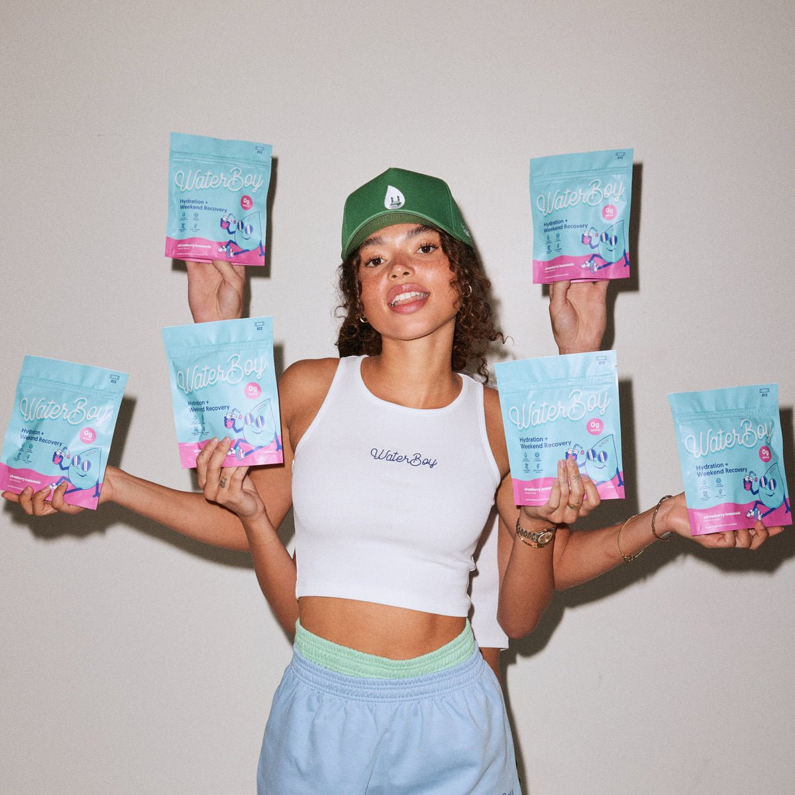
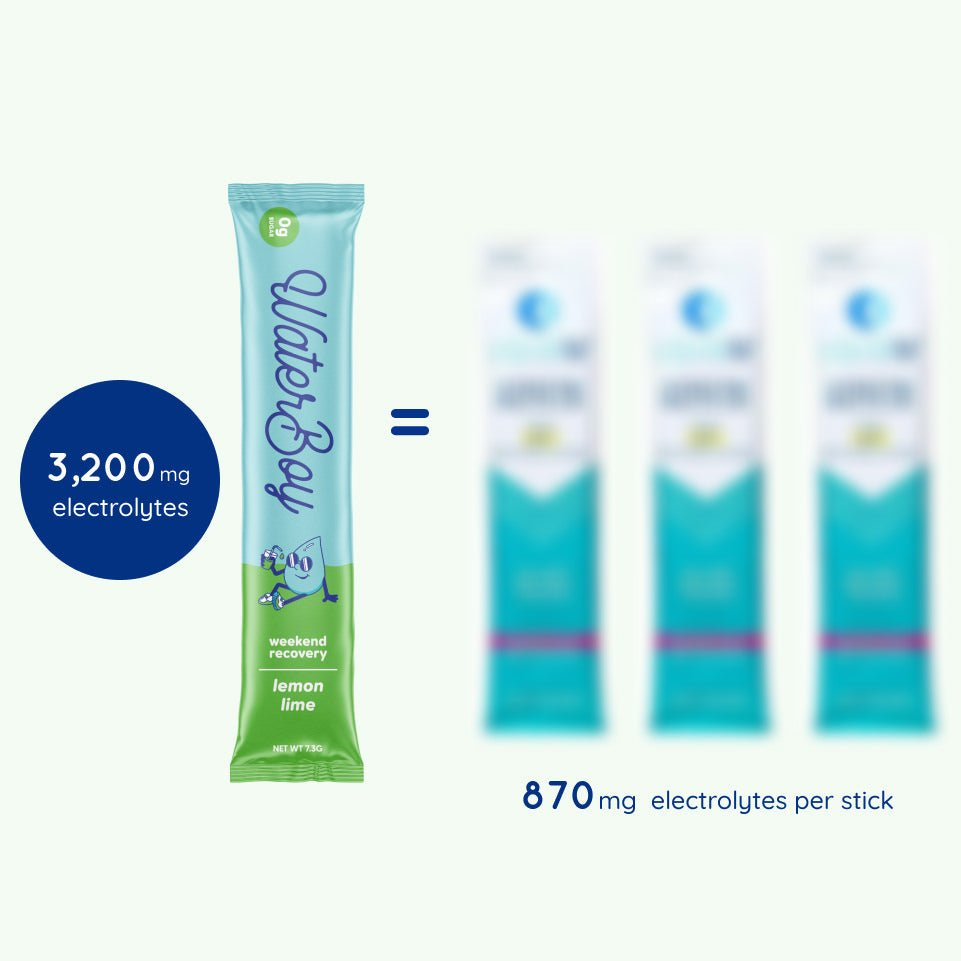
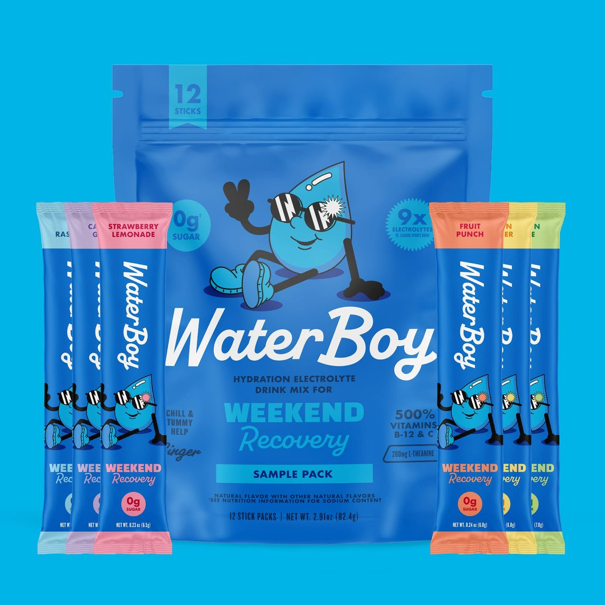

7 Reasons the Friend Who Planned the Trip Packs Weekend Recovery
Weddings, bachelorettes, festivals, the reunion that turns into three days. The person who organized it has one thing in their bag nobody else thought of.

Night one is the welcome drinks. Night two is the main event. Day three is the 9 a.m. brunch and a flight home. Anyone who has done a big weekend knows the hard part isn't the first night. It's the second morning.
Here's what's in the bag of the friend who always seems fine at brunch.
It replaces a whole bag of fixes
Waterboy's founders, Mike and Connor, used to run a five-step routine after nights out: Pedialyte for electrolytes, raw ginger, an Emergen-C and L-theanine. Weekend Recovery puts that routine in one stick. One thing to pack instead of five.
It puts back what water can't
When you drink, your body lets go of more water than usual, and sodium, potassium and magnesium go with it. By morning you owe your body water and salt. Water pays back the water. Each Weekend Recovery stick carries 3,205mg of electrolytes, including 1,120mg of sodium, to pay back the rest.

The routine is two steps: bookend the night
One stick the night of, ideally before you head to bed. One the next morning. On a three-day weekend, that's six sticks, half a pouch. Easy math for the group chat.
It fits in a clutch
The sticks are slim and flat. They go in a clutch, a jacket pocket, a fanny pack at a festival or the side pocket of a carry-on. Our customers bring them everywhere: "Took these with me to a weekend long festival" and "I won't go on vacation without it."
Zero sugar and no caffeine, so it works at 1 a.m.
After a weekend of cake, cocktails and late-night pizza, the last thing anyone needs is another sugar drink. Weekend Recovery has 0g sugar, a little organic stevia, and no caffeine, so the night-of stick won't keep you up.
There's enough to share, and flavors for everybody
A pouch has 12 sticks. The Sample Pack comes with all the flavors, so the group can fight over Strawberry Lemonade and Blue Raspberry instead of fighting over who planned brunch for 9 a.m.

People who travel a lot already swear by it
Weekend Recovery has 10,497 reviews on waterboy.com, averaging 4.7 stars. A few from people who pack it:
Took these with me to a weekend long festival
I won't go on vacation without it
before and after wine tastings
Just right after a wild night out
Individual experiences vary.
One honest note
It tastes salty, on purpose, because 1,120mg of sodium is the point. Mix it into a bigger bottle for a lighter taste. And it's not a miracle: as the founders put it, it's "a much better way to feel less shitty for $2." It can't undo the weekend. It puts back what the weekend took.

Pack Weekend Recovery
- One stick the night of, one the next morning
- 3,205mg electrolytes, 0g sugar, no caffeine
- Slim sticks for a clutch or carry-on
- Skip, change or cancel by text
- 30-day money-back guarantee
Questions
How many should I bring?
Two per person per night out: one the night of and one the next morning. A 12-stick pouch covers one person for about six nights out, or a couple for a long weekend.
How long does shipping take?
Orders usually process in 1 to 2 business days and ship in about 4 to 6. If your trip is sooner, Waterboy is also in stores including Target and Walmart.
Is that much sodium OK?
Each stick has 1,120mg of sodium. If you watch your sodium, are pregnant or have a health condition, check with your doctor first.